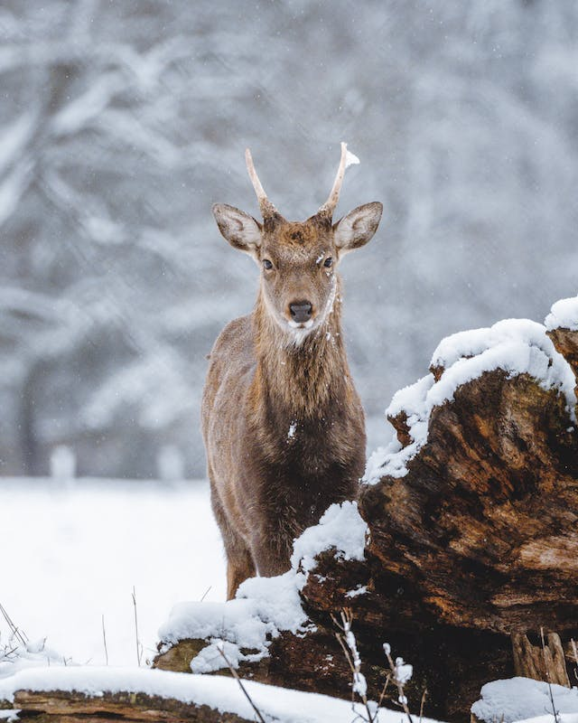

Os cervos, majestosos habitantes dos bosques e planícies, encantam com sua beleza serena e elegância natural. Dotados de galhadas imponentes, esses ungulados graciosos adicionam uma pitada de magia aos ecossistemas que habitam. Seus olhos expressivos e orelhas alertas testemunham uma sensibilidade aguçada, enquanto suas patas ágeis os conduzem com destreza pelos matagais e florestas. Os cervos, com sua pelagem suave e tonalidades terrosas, se misturam harmoniosamente ao cenário, camuflando-se como parte integrante da natureza. Além de sua estética deslumbrante, os cervos desempenham um papel vital na ecologia, contribuindo para a dispersão de sementes e influenciando a dinâmica das populações de plantas. Símbolos de graciosidade e equilíbrio na vida selvagem, os cervos inspiram admiração e respeito, lembrando-nos da complexa teia da vida que se desenrola nos habitats que compartilhamos.
